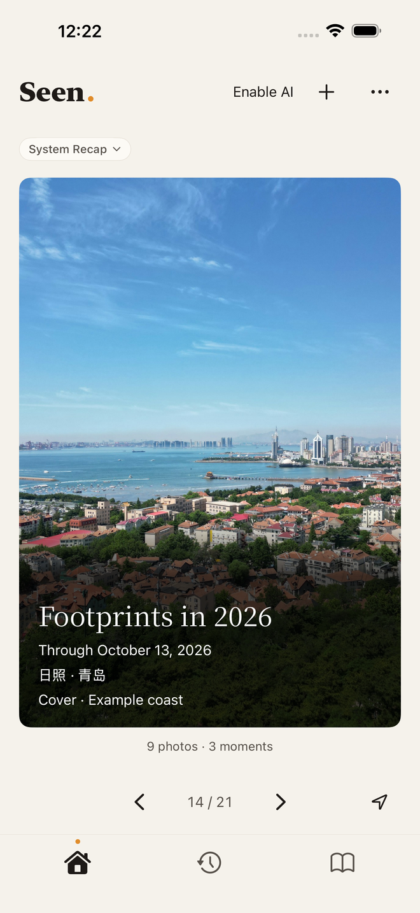
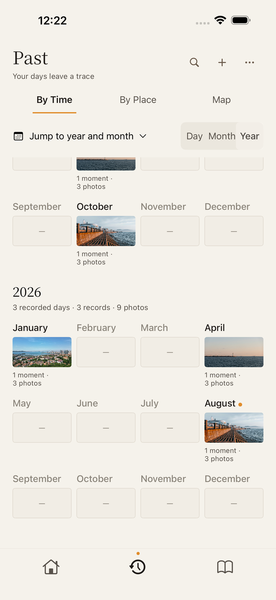
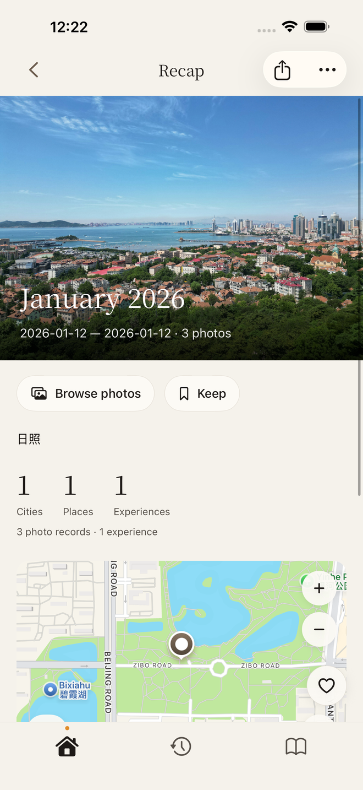
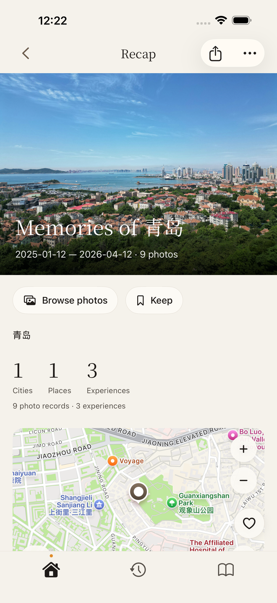

Seen: Photo Memories · Designed for iPhone
Return to the moments
behind your photos.
Seen: Photo Memories (App ID 6810665956) is a local-first photo memories app for iPhone by 浩然 刘 (Leo Liu). Choose which photos to add; Seen organizes them on your device into experiences using their available dates and reliable places. Browse by day, month or year, or search by date, city or place. No Seen account or AI is required for core organization and recaps.
Download on the App StoreiOS 26.5 or later · Chinese / English · Check your App Store for current download pricing and compatibility

Date · Place
Find a day. Find a place.
Browse by day, month or year, and search for dates, cities and places.
Month · Year · City
More than a year in review.
Revisit different days in the same place, monthly and yearly recaps, and changing destination records.
Keep · Edit · Share
Keep your own Seen collection.
Save a recap you want to revisit. Adjust its words and photos in place, then share its cover with dates and places.



Licensed photos and prepared sample records. Dates and places are illustrative.
Local first · Optional AI
Your records.
Your choice.
Core organization and recaps work without AI. Optional AI connects only to DeepSeek using your own API key. Photo understanding separately confirms photo scope and costs before sending cleaned, reduced still images. Relationship analysis sends the imported-experience index and the times, places and existing clues within the retrieved material scope; independent polishing sends only the original text you explicitly select. DeepSeek fees and privacy rules apply. Core records and works stay on your device, with local backup and restore.
How data is handled ↗Choose how you revisit your photos
Find a day or place again
For people who want to choose photos and revisit trips and everyday moments by date and reliable place. Recaps cover only added records with the relevant information.
Check your device and sync needs
Requires iOS 26.5 or later. Seen does not currently offer account-based cloud sync. Core recaps need no AI; optional AI requires your own DeepSeek API key, with fees charged by DeepSeek.
FAQ
Does Seen cost money? Are there subscriptions or in-app purchases?
The China and US storefronts showed a free download when checked on October 31, 2026. Check your regional App Store for current pricing and purchase items. Optional AI requires your own DeepSeek API key, with API fees charged separately by DeepSeek under your account rules. Core organization and recaps require no AI and incur no DeepSeek API fees.
Do I need a Seen account?
No. Core organization and recaps work without registering or signing in to a Seen account.
Does Seen upload my photos to a server?
Seen has no cloud photo library of its own. Core records, works and analysis caches stay on device; Apple Photos manages originals. Optional photo understanding sends reduced, metadata-stripped still images directly to DeepSeek after separate scope and cost confirmation. It requires your own DeepSeek API key, with fees charged by DeepSeek. Removing metadata does not make an image anonymous.
Can I use Seen without AI? Does AI cost extra?
Yes. Core organization and recaps work without AI. Optional AI connects only to DeepSeek, requires your own DeepSeek API key, and is charged by DeepSeek under your account rules. Photo understanding requires separate selection and cost confirmation. While Home AI authorization is enabled, material changes or explicit generation may trigger text analysis. AI may make mistakes or find nothing new; it does not directly rewrite experiences or saved works.
Which iPhones and iOS versions are supported?
Seen is designed for iPhone and currently requires iOS 26.5 or later. Check the App Store for specific device compatibility.
Will organization delete originals in Apple Photos?
Organization, recaps and sharing do not delete original photos. Seen requests deletion of specified Apple Photos originals only after you separately choose original deletion and complete the system confirmation.
Return to the days behind your photos.
iOS 26.5 or later · Chinese / English · Check your App Store for current download pricing and compatibility
View Seen on the App Store